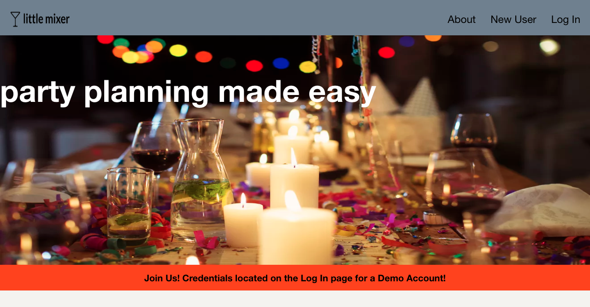
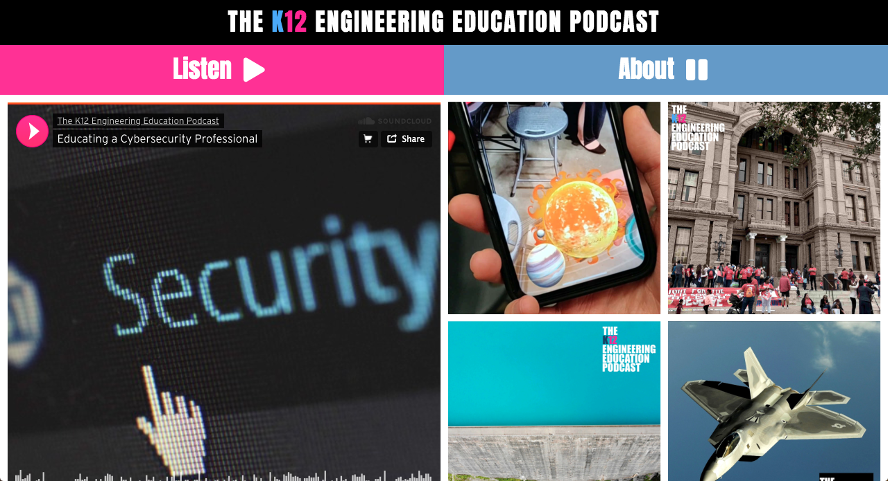
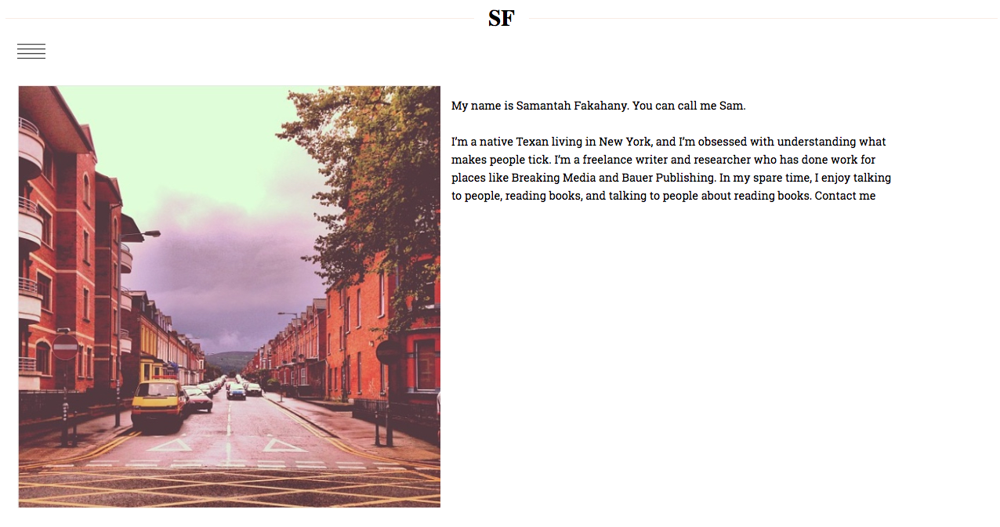

brarian
namonywa
about me
my work
contact
Hi, I'm Brarian, a full-stack web developer.
I'm a pop culture fanatic who spends my time outside of work on the water, in the gym, or traveling.
my work


